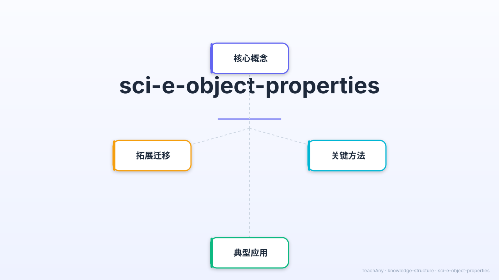

小学科学 G1 · 物质科学 · 用感官探索世界

用ABT叙事结构开启今天的探索之旅
苹果是红色的，积木是方形的，棉花是软的。我们每天都在接触各种各样的物体。
你有没有想过——我们怎么知道物体是什么颜色、什么形状、是软的还是硬的？是谁告诉我们的呢？
学习用我们的感官（眼、手、鼻、耳）科学地观察和描述物体的外部特征，成为小小科学家！
三个学习目标，循序渐进
22秒精华动画，带你认识物体的外部特征
我们的身体有五个"观察工具"
用眼看，用手摸，发现6大特征
把左边的物体卡片，拖到右边正确的特征分类中
点击下面的物体卡片，感受它们的质感差异
根据特征描述，猜出是什么物体
3道选择题，每题都有详细的错因分析
完成课程活动，解锁你的专属徽章！
已完成：0 / 5 项
你已经是个小小科学家了！
可以观察物体的颜色（红/蓝/绿…）和形状（圆/方/长/三角…）
可以感觉物体的软硬（软棉花/硬石头）和粗糙程度（光滑玻璃/粗糙砖头）
可以闻到物体的气味，帮助我们识别不同物体
轻敲物体可以听到声音，软硬不同，声音也不同
组合多种特征描述物体，就是科学观察！如：苹果=圆形+红色+光滑+有点重
嘴巴是危险的观察工具——不认识的物体一定不能用嘴尝！其他4种感官都安全。